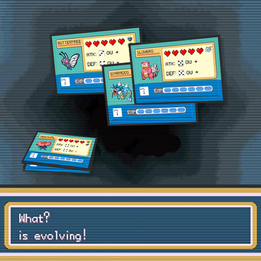
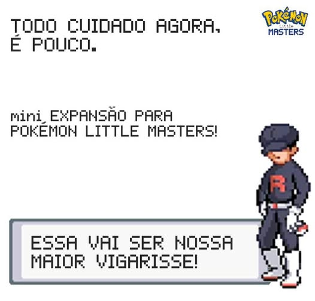

Aquele Pokémon de várzea!
Um jogo feito de Fã para Fã. Disponibilizado gratuitamente em formato Print and Play.
Criação e Design por Dan Leonardi
A arte do jogo foi pega em pesquisas de buscadores. Ou seja, propriedade da Nintendo.
Em Pokémon Little Masters você assume o papel de um jovem aspirante a treinador tentando alcançar a fama de ninguém menos que seu conterrâneo, Ash Ketchum. Mas antes de sair por aí se aventurando pelo mundo você deve provar que, NO MÍNIMO, pode derrotar qualquer um dos 6 líderes municipais e ganhar sua respectiva insígnia.
Componentes:
- 15 - cartas de tabuleiro
- 12 - cartas de encontros aleatórios
- 6 - cartas de lideres municipais
- 27 - cartas de pokemons
- 3 - cartas de jogador
- 3 - tokens de pokemon ativo
- 3 - tokens stand-up de jogadores
- 1 - carta referência
- 20 - tokens de dano
- 10- tokens de poção de cura
- 10 - tokens de revive
- 10- tokens de Pokebola
- 10 - tokens de Great ball
- 18 - tokens de insígnia
- 9 - marcadores em seta*
- 17 - dados d6**
*Marcadores podem ser substituídos por outros.
**Esse total é para 3 jogadores.
Materiais extras:
Iniciais do Prof. Carvalho
Agora você é digno de escolher um dos clássicos e passar para o próximo nível de treinador.
Termine o jogo base e desbloqueie esse conteúdo extra. Agora sim! Você pode fazer a tão esperada escolha.
*Inclui cartas de itens para tomar o lugar dos Tokens, se desejar.
Evoluções!
Agora é hora de evoluir seus Pokémons e avançar para o próximo nível de treinador.
R de Rocket
O inimigo mora ao lado!
A partir de agora a cautela será sua aliada, cuidado!
Análise na Ludopedia
Nesse link aqui você pode encontrar uma análise detalhada do jogo, feita pelo amigo Dheyrdre. Nessa analise ele fala sobre os pontos positivos e negativos do jogo, além de trazer uma visão geral sobre a experiência de jogo.